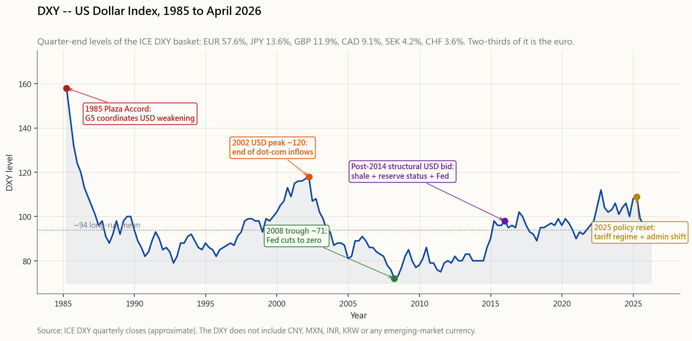
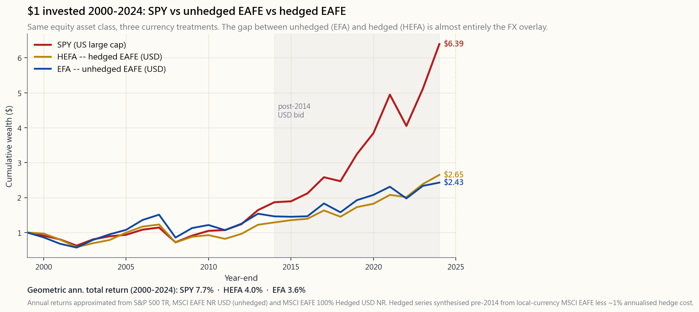

Week 22: Currency and International Diversification — DXY, FX Hedging, and Why Most US Investors Should Stay Home
1. Why This Is Important
The textbook chapter on international investing reads like a travel brochure. Lower correlations! Untapped growth! Cheaper valuations! Diversify or perish! All of it is academically defensible and operationally misleading for a US-based retail investor in April 2026. The honest version of this lesson, which the textbook will not give you, is that owning international equities is a position on a foreign currency stapled to a position on foreign equities, and the currency leg routinely overwhelms the equity leg over any horizon you actually care about.
There are four reasons this lesson exists in spite of the conclusion it lands on.
The travel brochure argues for a 30-40% international weight. The plumbing argues for closer to zero. This lesson lands in between, with the bias toward zero.
2. What You Need to Know
2.1 The DXY Basket — Six Currencies, Frozen Weights
The US Dollar Index (ticker DXY, futures symbol DX) is published by ICE Futures and goes back to March 1973, when it was set at 100 against a basket of ten currencies. After the euro absorbed the German mark, French franc, Italian lira, Dutch guilder, and Belgian franc in 1999, the index was reduced to the six survivors. The weights have not been updated since:
- EUR — 57.6%. The combined euro replaced five of the original ten currencies and inherited their summed weight. Two-thirds of the DXY is, effectively, "the euro relative to the dollar."
- JPY — 13.6%. Japan was the second-largest US trading partner in 1973, and the weight has stuck.
- GBP — 11.9%. The pound's weight reflects pre-euro London-as-financial-centre, not current trade.
- CAD — 9.1%. Canada is by far the US's largest goods trading partner today, but the DXY only gives it 9%.
- SEK — 4.2%. Sweden, in 2026, has roughly the trade footprint of New Jersey.
- CHF — 3.6%. Swiss franc, the safe-haven satellite.
image/week22_dxy_decade.png plots DXY from 1985 through April 2026, with five regime markers: the 1985 Plaza Accord that orchestrated the post-1985 dollar decline; the 2002 dollar peak at ~120 ahead of the dot-com unwind; the 2008 trough near 71 during the financial crisis as the Fed slashed rates; the post-2014 structural USD bid that has dominated the last decade; and the 2025 policy-driven reset as the new administration's tariff regime forced the dollar lower against the basket.

The honest health-warning on the DXY is that it is not a measure of the dollar. It is a measure of the dollar against a 1973-frozen basket dominated by Europe. The Fed publishes a properly weighted, trade-broad alternative (the Trade-Weighted US Dollar Index, FRED series DTWEXBGS) that includes the Chinese yuan, Mexican peso, Korean won, and other actual trading partners. The broad index moves differently from DXY in any given quarter, and the gap matters when you are sizing FX risk against your actual dollar liabilities. For most retail commentary, however, DXY is the dollar — because that is what the screen shows.
2.2 The Currency Overlay — Why Your International ETF Is Two Bets
When you buy EFA (iShares MSCI EAFE, the developed-international benchmark), you are taking on two distinct exposures simultaneously:
The total USD return for a single year is approximately:
$$ R_{\text{USD}} \approx (1 + R_{\text{local}}) \times (1 + R_{\text{FX}}) - 1 $$
where $R_{\text{FX}}$ is the foreign currency's appreciation versus the dollar. The two effects compound rather than add, but for small-to-moderate moves the simple sum is a fine approximation: a foreign equity market that rises 8% in local currency, in a year when the foreign currency strengthens 5% against the dollar, returns roughly +13% in USD. The same equity market, in a year when the foreign currency weakens 10%, returns roughly -2% in USD — flat equities turned into a loss by the FX leg.
This is not a side effect; it is the dominant story in many years. From 2014 through 2024, US equities (SPY) compounded at roughly 12.5% annualised. Unhedged developed-international (EFA) compounded at roughly 5%. Hedged developed-international (HEFA, MSCI EAFE Hedged) compounded at roughly 8%. The ~3 percentage points per year between EFA and HEFA over that decade was almost entirely the dollar overlay — the equities themselves did similar things in their own currencies. Investors who held EFA spent ten years funding a structural short euro / short yen position they did not realise they had. The chart in image/week22_us_vs_intl.png makes the picture concrete.

There is one caveat that matters and will not be obvious from the picture. Over a single decade, the FX overlay can be the entire return story. Over very long horizons (30+ years), purchasing-power parity roughly anchors major currencies, and the FX overlay's net contribution shrinks toward zero. The investor still has to survive the multi-year deviations, which routinely run to ±30% from PPP and last for a decade. "Wash out over decades" is small consolation if the unhedged drag costs you 30% during the years you actually wanted to retire on.
2.3 FX Hedging — How HEFA Works and What It Costs
A currency-hedged ETF removes the FX overlay using rolling currency forwards. The fund manager calculates the dollar value of each foreign-currency position, then sells that currency forward (typically one month at a time) and rolls the contract at expiry. The forwards are priced by covered interest parity, which says the forward rate equals the spot rate adjusted for the interest-rate differential between the two currencies:
$$ F = S \times \frac{1 + r_{\text{foreign}}}{1 + r_{\text{US}}} $$
When US rates are higher than foreign rates (the typical post-2022 regime), the forward sells the foreign currency at a lower implied rate than spot — the hedger earns the rate differential. When US rates are lower than foreign rates (less common; emerging markets often invert this), hedging costs the differential. In April 2026:
- EUR hedge cost: ~2.0% per year (Fed 4.5% vs ECB 2.5%; the hedger is paid the differential, but operational + spread drag offsets most of it; net cost is small but positive).
- JPY hedge cost: ~3.5% per year favourable, because Japan still has near-zero rates while the Fed sits at 4.5%. Hedging yen is one of the cheaper hedges in the developed world.
- GBP hedge cost: ~0.5% per year, because BoE and Fed have converged.
- EM currency hedges: ~5-15% per year cost, because EM rates run well above US rates. Hedging EM is almost never worth it; the hedge eats the equity return.
2.4 Japan's Lost Decade vs US Tech — A Cautionary Tale Both Ways
The Nikkei 225 peaked at 38,915 on December 29, 1989. It did not regain that level until February 2024 — a 34-year round trip to flat. For Western textbook writers, Japan is the standard cautionary tale that "stocks for the long run" can fail in a single market, and the mandatory lesson is to diversify internationally. The conclusion is reasonable. The implementation is harder than the textbook admits.
A US-based investor who bought Japanese equities at the 1989 peak in yen terms is still close to break-even over 35 years. The same investor who bought via an unhedged dollar-denominated vehicle had a meaningfully worse experience because the yen weakened roughly 30% against the dollar over the same period. The investor who hedged the yen exposure had a slightly better experience but still spent 25 years underwater. Diversifying out of Japan into US equities in 1989 would have produced one of the best 30-year stretches in market history — but only if you had identified Japan as the bubble at the time, which the consensus emphatically did not.
The mirror image applies looking forward from April 2026. The S&P 500 has compounded at roughly 13% annualised for the past 15 years, driven by a small handful of US tech megacaps. CAPE sits in the most expensive decile of US-stock-market history (Week 21). It is entirely possible — not predicted, but possible — that the next 15 years for US equities look more like 1990s Japan than the 2010s. The honest defence against that scenario is a small allocation to non-US developed (hedged), a small allocation to emerging (unhedged, sized for ruin), and the four-tranche framework. Diversification is insurance, not arbitrage. It costs a little in expected return for a little less variance in possible outcomes. Buying EXUS because "Japan once happened" is a reasonable insurance trade. Buying it because "international should outperform" is a story you cannot defend with the data.
2.5 The Post-2010 Structural Dollar Bid
Something changed around 2011-2014. The DXY broke out of a 30-year range, and despite the Fed cutting to zero, the dollar climbed and stayed there. The structural drivers are not mysterious:
- The Fed's relative tightness. Even at zero, US real rates ran higher than European or Japanese real rates because the Eurozone tipped into outright deflation and Japan never escaped it. Capital flows toward the higher real rate.
- Shale. The US shale revolution turned the country from the world's largest oil importer into the world's largest producer. The persistent current-account drag from energy imports vanished, removing a chronic supply of dollars from foreign exchange markets.
- Reserve status. The 2008 crisis demonstrated that, paradoxically, a US-originated financial crisis still produced a flight into dollars rather than out of them. The dollar's reserve role strengthened, not weakened, when its issuer was at the centre of the storm.
- Big-tech earnings. US companies repatriated foreign earnings during the 2017 tax reform window and have continued to dominate global capital expenditure. The dollar capex cycle has been disproportionately a US capex cycle.
2.6 The Honest Conclusion
The four constraints stack on top of each other:
The developed-market equity book a serious retail investor should hold is US-listed companies as the default, with a small (5-15%) international sleeve held in hedged form as a diversifier. Emerging markets, if held at all, sit in a tranche-4 exploration sleeve sized for total loss. The travel-brochure 40% international weight does not survive the four constraints above. The plumbing wins.
The interactive lab interactive/week22_fx_lab.html lets you crank the two underlying levers — annual USD strengthening and foreign equity local return — and watch the unhedged versus hedged USD totals diverge in real time, with one-click presets for the 1985 Plaza, 2002 EUR creation, 2014 USD bid, and 2025 reset regimes. Spend ten minutes there before deciding what your international weight should be.
3. Common Misconceptions
4. Q&A Section
Q: How much international should I actually hold? A: For most US-based retail readers in April 2026, 5-15% of equity in hedged developed-international (HEFA or DBEF) and 0-5% in emerging (VWO, unhedged), with the remaining 80-95% in US-listed names. The exact number depends on age, liability profile, and whether you can stomach a multi-year underperformance versus pure US. Zero international is a defensible choice. Forty percent international is not, given the constraints in §2.6.
Q: HEFA or DBEF — which hedged international ETF? A: Functionally near-identical. HEFA (iShares, 0.35% expense ratio) is larger and more liquid; DBEF (Xtrackers, 0.36%) is the older product. Pick based on liquidity in your account size. The tracking difference is rounding error.
Q: Should I hedge emerging markets too? A: Almost never. EM hedge costs run 5-15% per year because EM short rates are well above US short rates. The hedge eats the equity return. Hold VWO unhedged and accept that the currency exposure is part of the asset class — or do not hold EM at all.
Q: What about the yuan? Will it ever be in DXY?
A: Not in the foreseeable future. ICE has shown no interest in re-weighting DXY, and the contract has $20 billion+ of derivatives priced off the legacy basket. The Fed's broad trade-weighted index (FRED DTWEXBGS) does include CNY at ~16% — use that index if you want a dollar measure with the yuan in it. DXY is what the financial press will keep quoting.
Q: Why did EFA underperform SPY so badly from 2010 to 2024? A: Roughly half the gap was the equity itself (US tech compounded faster than European industrials and Japanese financials), and roughly half was the dollar overlay (the dollar rose ~25% against the euro and ~50% against the yen over that window). HEFA cut the gap roughly in half — better, but still well behind SPY. The structural dollar bid was the dominant factor, not stock-picking.
Q: Is direct foreign-stock ownership different from ETF ownership? A: Mechanically the same currency exposure, but with extra friction. Buying Toyota directly on the Tokyo exchange requires a JPY brokerage account, JPY funding, withholding tax forms, and worse spreads than the TM ADR. For a retail investor, ADR (TM, NSRGY, SHEL, etc.) or hedged ETF (HEFA) is essentially always the right choice — direct foreign-exchange ownership pays no extra premium for the extra paperwork.
Q: The DXY chart shows a 12% drop from early 2025 — does that mean unhedged international is now the trade? A: It means unhedged international has already outperformed hedged international over the last twelve months. Whether that continues depends on whether the 2025 reset is the start of a multi-year dollar bear or a tactical retracement inside the longer-term bid. Trying to time which it is, is exactly the sort of macro call you cannot reliably win — the market can stay irrational longer than you can stay solvent. The honest answer: hold the hedged base position, and add a small unhedged sleeve only if you have a specific FX thesis you can defend.
Q: What about the European Stoxx 600 vs MSCI EAFE? Are they interchangeable? A: Stoxx 600 is Europe-only; EAFE includes Japan, Australia, and Hong Kong (with all the usual caveats on HK governance and capital controls). For a US investor wanting one developed-international exposure, EAFE-based ETFs (EFA / HEFA / IEFA) are the more diversified default. Pure-Europe ETFs (FEZ, IEUR) make sense only if you have a specific Europe-only thesis.
Q: Does the post-2008 quantitative-easing regime change the international diversification math? A: Yes, materially. Coordinated central-bank action (Fed, ECB, BoJ all easing or tightening together) has driven equity correlations across developed markets above 0.8 — much higher than the pre-2008 ~0.6 the textbook studies were built on. You get less diversification benefit from EXUS in the QE-era than the academic literature suggests, which is another reason to size the international sleeve small.
Q: Should I use ACWI as a one-fund global solution? A: ACWI (iShares MSCI ACWI, ~0.32% expense ratio) holds ~3,000 global names cap-weighted. It is roughly 60% US, 30% developed-international (unhedged), and 10% emerging. For a reader who wants a single equity ETF and refuses to think about geographic weights, ACWI is defensible. For anyone willing to think about it for ten minutes, the right shape is "VOO + small HEFA + tiny VWO" with explicit weights — same exposure with hedged developed and lower expense ratios.
Q: What FX-related signals actually matter for portfolio decisions? A: Three: (1) the interest-rate differential between the US and the foreign country (predicts hedge cost over the next year), (2) the PPP gap (5-15-year mean-reversion anchor), and (3) the direction of the broad trade-weighted dollar (DTWEXBGS, not DXY) over the past 12 months (momentum signal — every market has a momentum reading and a mean-reversion reading, and you choose your playbook by regime). DXY itself is a news-watch instrument, not a decision input.
第二十二週：貨幣與國際分散投資——美元指數、外匯對沖，以及為何大多數美國投資者應留守本土
1. 為何此課題重要
教科書中關於國際投資的章節讀起來像一本旅遊宣傳冊。低相關性！未開發的增長空間！估值便宜！分散投資或被淘汰！這些論點在學術上站得住腳，但對於2026年4月的美國散戶投資者而言，在實際操作上卻具有誤導性。這堂課的誠實版本——教科書不會告訴你的——是：持有國際股票，等同於在外國股票倉位上附帶了一個外匯倉位，而外匯這條腿，在任何你真正在乎的投資期內，往往都能蓋過股票這條腿。
儘管如此，這堂課仍有存在的四個理由。
旅遊宣傳冊主張30至40%的國際比重。管道機制卻指向接近零。這堂課的落點介於兩者之間，且偏向零的方向。
2. 你需要掌握的知識
2.1 美元指數的貨幣籃子——六種貨幣，固定權重
美元指數（代號DXY，期貨代號DX）由ICE期貨交易所發布，追溯至1973年3月，初始值設為100，對標十種貨幣的籃子。1999年歐元吸納了德國馬克、法國法郎、意大利里拉、荷蘭盾和比利時法郎後，指數縮減至現存的六種貨幣。權重自此未有更新：
- 歐元——57.6%。 歐元取代了原來十種貨幣中的五種，並繼承了它們合計的權重。美元指數的三分之二，實際上就是「歐元相對於美元」的走勢。
- 日圓——13.6%。 1973年，日本是美國第二大貿易夥伴，這一權重就此沿用至今。
- 英鎊——11.9%。 英鎊的權重反映的是歐元面世前、倫敦作為全球金融中心的歷史地位，而非當前的貿易格局。
- 加元——9.1%。 加拿大如今是美國最大的商品貿易夥伴，但美元指數僅賦予其9%的比重。
- 瑞典克朗——4.2%。 2026年的瑞典，其貿易規模大約相當於美國新澤西州。
- 瑞士法郎——3.6%。 瑞郎，避險資產的衛星成員。
image/week22_dxy_decade.png的圖表展示了1985年至2026年4月的美元指數走勢，並標注了五個時代分水嶺：1985年的廣場協議（協調引導美元從1985年後持續下跌）；2002年約120的美元高峰（科網泡沫瓦解前夕）；金融危機期間因聯儲局大幅減息而出現的2008年近71低位；2014年後主導過去十年的結構性美元強勢；以及2025年政策驅動的重置（新一屆政府的關稅政策迫使美元相對籃子走低）。
對美元指數，有一點必須坦誠：它並非「美元」的量度工具。它只是美元相對於一個1973年凍結的、以歐洲貨幣為主的籃子的量度。聯儲局另有一個較合理的廣義貿易加權美元指數（聯儲局經濟數據庫系列DTWEXBGS），涵蓋人民幣、墨西哥披索、韓圜及其他實際貿易夥伴貨幣。廣義指數在任何季度的走勢均可能與美元指數大相徑庭，當你衡量相對於實際美元負債的外匯風險時，這個差距至關重要。不過對大多數散戶評論而言，美元指數就是美元——因為這是屏幕上顯示的數字。
2.2 外匯疊加層——為何你的國際交易所買賣基金同時是兩個賭注
當你買入EFA（安碩MSCI EAFE，已發展市場國際基準），你同時承擔了兩種截然不同的敞口：
單年以美元計算的總回報大致為：
$$ R_{\text{美元}} \approx (1 + R_{\text{當地}}) \times (1 + R_{\text{外匯}}) - 1 $$
其中$R_{\text{外匯}}$是外幣相對美元的升值幅度。兩者的效果是複合計算的，而非簡單相加，但對於溫和的波動幅度，直接加總是個不錯的近似：若外國股市以當地貨幣上漲8%，而當年外幣相對美元升值5%，以美元計算的回報約為+13%。同樣是股市上漲8%，若當年外幣相對美元貶值10%，以美元計算的回報約為-2%——股票的正回報被外匯這條腿拉成了虧損。
這不是副作用；在很多年份，這才是主旋律。從2014年至2024年，美國股票（SPY）的年化複合回報約為12.5%。未對沖的已發展市場國際股票（EFA）年化複合回報約為5%。對沖後的已發展市場國際股票（HEFA，MSCI EAFE對沖版）年化複合回報約為8%。EFA與HEFA在那十年的約每年3個百分點差距，幾乎完全來自美元疊加層——以各自貨幣計算，兩者的股票表現其實相若。持有EFA的投資者，花了十年在不自知的情況下，承擔了一個結構性的歐元沽空兼日圓沽空倉位。image/week22_us_vs_intl.png的圖表將這幅景象清晰地呈現出來。
有一點需要注意，而且不一定能從圖表中直接看出。在單個十年內，外匯疊加層可以是回報的全部來源。然而從極長期（30年以上）來看，購買力平價大致上能為主要貨幣提供錨定，外匯疊加層的淨貢獻趨向於零。投資者仍須在數年偏離周期中撐過去，而此類偏離經常達到購買力平價的正負30%，且往往持續十年之久。「數十年後可抵銷」，對於那些在你真正希望退休的年份造成30%拖累的外匯波動，並不是什麼安慰。
2.3 外匯對沖——HEFA如何運作及其成本
貨幣對沖交易所買賣基金透過滾動外匯遠期合約消除外匯疊加層。基金經理計算每個外幣倉位的美元等值，然後賣出該貨幣遠期（通常以一個月為周期），並在到期時滾動合約。遠期合約按照利率平價定價，即遠期匯率等於即期匯率按兩種貨幣的利率差調整後的結果：
$$ F = S \times \frac{1 + r_{\text{外幣}}}{1 + r_{\text{美元}}} $$
當美元利率高於外幣利率（2022年後的典型狀態），遠期賣出外幣的隱含匯率低於即期匯率——對沖者賺取了利率差。當美元利率低於外幣利率（較少見；新興市場往往呈現這種反轉），對沖則需付出該利率差。以2026年4月的情況：
- 歐元對沖成本：約每年2.0%（聯儲局4.5%對歐洲央行2.5%；對沖者名義上收取利率差，但操作成本加點差抵銷了大部分；淨成本雖小但為正數）。
- 日圓對沖成本：約每年3.5%的有利差，因為日本利率仍接近零，而聯儲局維持在4.5%。對沖日圓是已發展市場中成本最低的對沖之一。
- 英鎊對沖成本：約每年0.5%，因為英倫銀行與聯儲局利率已趨近。
- 新興市場貨幣對沖：約每年支出5至15%，因為新興市場利率遠高於美國利率。對沖新興市場幾乎從不划算；對沖成本會吞噬股票回報。
2.4 日本失落的十年對比美國科技股——一個雙向的警世故事
日經225指數於1989年12月29日升抵38,915點高位。此後直至2024年2月才重回該水平——34年的原地踏步。對西方教科書作者而言，日本是「長持股票必勝」論可能失靈的標準警示，必然得出的結論是國際分散投資的必要性。這個結論是合理的。但執行起來比教科書承認的要困難得多。
一位以日圓計算、在1989年高峰買入日本股票的美國投資者，35年後基本上接近收支平衡。同一位透過未對沖美元計價工具買入的投資者，境況則要差得多，因為日圓在同期相對美元貶值了約30%。對沖日圓敞口的投資者境況稍好，但仍在水底下浸了25年。若在1989年把資金從日本轉向美國股票，將創下市場歷史上最佳的30年業績之一——但前提是你必須在當時就判斷出日本是泡沫，而當時的市場共識絕非如此。
反過來看，從2026年4月往前展望亦如是。標準普爾500指數過去15年的年化複合回報約為13%，由少數幾只美國科技巨頭所驅動。市盈率現正處於美國股市有史以來最昂貴的十分位區間（第21週）。未來15年的美國股票表現，完全有可能——不是預測，而是有此可能——更像1990年代的日本，而非2010年代的走勢。抵禦這種情況的誠實之道，是對未對沖的已發展市場國際（對沖持有）作出少量配置，對新興市場（未對沖，規模以可承受全損為限）作出少量配置，並運用四段式框架。分散投資是保險，不是套利。 它以少量的預期回報換取結果分布中少量的波動性縮減。因「日本曾經發生」而買入美國以外股票，是一個合理的保險交易。因「國際股票應當跑贏」而買入，則是一個數據無法支撐的故事。
2.5 2010年後的結構性美元強勢
大約在2011至2014年，某種東西改變了。美元指數突破了一個30年的區間，儘管聯儲局將利率降至零，美元仍然攀升並維持高位。這些結構性驅動力並不神秘：
- 聯儲局的相對緊縮。 即使在零利率環境下，美國的實際利率仍高於歐元區或日本，因為歐元區陷入了徹底的通縮，而日本從未擺脫困境。資本流向實際利率較高的地方。
- 頁岩油。 美國頁岩油革命使美國從全球最大石油進口國轉型為全球最大生產國。能源進口帶來的長期經常賬戶赤字消失了，外匯市場上慢性的美元供應來源也隨之消退。
- 儲備貨幣地位。 2008年金融危機弔詭地顯示，即使是由美國引發的金融危機，資本仍選擇流入而非流出美元。美元的儲備貨幣角色，在其發行國處於風暴中心時，不降反升。
- 大型科技公司盈利。 美國企業在2017年稅改窗口期回流海外盈利，此後持續主導全球資本開支。美元資本開支周期，在很大程度上就是美國的資本開支周期。
2.6 誠實的結論
四重制約層層疊加：
一個認真的散戶投資者應持有的已發展市場股票組合，是以美國上市公司為默認配置，輔以小型（5至15%）對沖形式的國際持倉作為分散投資工具。若持有新興市場，應放入第四段探索性持倉，規模以可承受全損為限。旅遊宣傳冊式的40%國際比重，在上述四重制約下根本站不住腳。管道機制勝出。
互動實驗室interactive/week22_fx_lab.html讓你自行調整兩個基本槓桿——每年美元升值幅度和外國股票當地回報——即時觀察未對沖與對沖的美元總回報如何分道揚鑣，並設有一鍵預設場景，涵蓋1985年廣場協議、2002年歐元面世、2014年美元強勢及2025年重置等歷史時期。在決定你的國際配置比重之前，請花十分鐘在這個工具上。
3. 常見誤解
4. 問答環節
問：我實際上應該持有多少國際股票？ 答：對於2026年4月大多數以美元計算的美國散戶讀者而言，5至15%的股票配置放在對沖已發展市場國際股票（HEFA或DBEF），0至5%放在新興市場（VWO，未對沖），其餘80至95%放在美國上市公司。確切比例取決於年齡、負債狀況，以及你能否承受多年跑輸純美國股票的局面。零國際配置是一個站得住腳的選擇。40%國際配置則不然，鑒於第2.6節所列的種種制約。
問：HEFA還是DBEF——選哪只對沖國際股票交易所買賣基金？ 答：功能上幾乎完全相同。HEFA（安碩，開支比率0.35%）規模更大、流動性更好；DBEF（Xtrackers，0.36%）是較早推出的產品。根據你的賬戶規模和流動性需求選擇。追蹤誤差的差距微不足道。
問：我是否也應該對沖新興市場？ 答：幾乎從不。新興市場短期利率遠高於美國短期利率，對沖成本每年達5至15%。對沖成本會吞噬股票回報。持有VWO不作對沖，接受貨幣敞口是這個資產類別的一部分——或者根本不持有新興市場。
問：人民幣會進入美元指數嗎？
答：在可預見的將來不會。ICE對重新調整美元指數權重毫無興趣，而以舊有籃子定價的衍生工具規模已逾200億美元。聯儲局的廣義貿易加權指數（聯儲局經濟數據庫DTWEXBGS）確實納入了人民幣，比重約16%——若你需要一個包含人民幣的美元量度工具，請使用該指數。財經媒體會繼續引用美元指數。
問：為何2010年至2024年EFA跑輸SPY如此之多？ 答：差距中約一半來自股票本身（美國科技股的複合增長速度快於歐洲工業股和日本金融股），另一半來自美元疊加層（美元在這段時間相對歐元升值約25%，相對日圓升值約50%）。HEFA將差距縮小了約一半——有所改善，但仍遠落後於SPY。結構性美元強勢才是主要因素，而非個股選擇。
問：直接持有外國股票與持有交易所買賣基金有何不同？ 答：外匯敞口在機制上相同，但摩擦成本更高。直接在東京交易所買入豐田，需要日圓券商賬戶、日圓資金、預扣稅表格，以及比TM美國預託證券更差的點差。對散戶而言，美國預託證券（TM、NSRGY、SHEL等）或對沖交易所買賣基金（HEFA）幾乎永遠是正確選擇——直接在外國交易所買入並不能換取額外的溢價回報，卻要承受額外的手續繁瑣。
問：美元指數圖表顯示2025年初以來下跌了12%——這是否意味著未對沖國際股票現在是更好的選擇？ 答：這意味著未對沖國際股票在過去十二個月已然跑贏了對沖國際股票。這種狀況能否持續，取決於2025年的重置是多年美元熊市的開端，還是長期強勢趨勢內的短期技術性回落。試圖判斷究竟是哪種情況，正是那種你無法可靠地贏的宏觀判斷——市場保持非理性的時間，可以比你保持償付能力的時間更長。誠實的答案是：持有對沖基礎倉位，只有在你能夠清晰闡述外匯觀點的情況下，才考慮增加少量未對沖持倉。
問：歐洲STOXX 600與MSCI EAFE——兩者可以互換嗎？ 答：STOXX 600僅限歐洲；EAFE還包括日本、澳洲和香港（附帶所有關於香港管治和資本管制的慣常注意事項）。對於需要單一已發展市場國際敞口的美國投資者，以EAFE為基礎的交易所買賣基金（EFA / HEFA / IEFA）是分散投資更充分的默認選擇。純歐洲交易所買賣基金（FEZ、IEUR）只有在你有特定歐洲觀點時才有意義。
問：2008年後的量化寬鬆周期是否改變了國際分散投資的數學邏輯？ 答：是的，影響顯著。各大央行的協調行動（聯儲局、歐洲央行、日本銀行同步寬鬆或收緊），已將已發展市場股票之間的相關性推高至0.8以上——遠高於教科書研究所依據的2008年前約0.6的水平。量化寬鬆時代，美國以外股票的分散投資效益，比學術文獻所示更為有限，這是將國際持倉規模維持偏小的另一個理由。
問：我應該以ACWI作為一站式全球投資方案嗎？ 答：ACWI（安碩MSCI全球指數交易所買賣基金，開支比率約0.32%）按市值加權持有約3,000只全球股票。大致分布為美國60%、已發展市場國際（未對沖）30%、新興市場10%。對於希望持有單一股票交易所買賣基金、不願考慮地區比重的讀者，ACWI是說得過去的選擇。對於任何願意花十分鐘思考的人，正確的架構是「VOO + 少量HEFA + 極少量VWO」的組合，並設定明確的比重——同等的敞口，但已對沖已發展市場部分，且開支比率更低。
問：哪些與外匯相關的信號對投資組合決策真正重要？
答：三個：（1）美國與外國之間的利率差（預測未來一年的對沖成本）；（2）購買力平價差距（5至15年均值回歸錨點）；（3）過去12個月廣義貿易加權美元（聯儲局DTWEXBGS，而非美元指數）的走向（動量信號——每個市場都有動量讀數和均值回歸讀數，你根據所處的市場環境選擇策略框架）。美元指數本身是一個新聞觀察工具，而非決策輸入。
第二十二週：貨幣與國際分散投資——DXY、匯率避險，以及為何大多數美國投資人應留守本土
1. 為何這個主題至關重要
教科書上關於國際投資的章節讀起來像旅遊宣傳冊。低相關性！未開發的成長潛力！更低廉的估值！不分散就等死！這些論點在學術上都站得住腳，對2026年4月、身處美國的散戶投資人而言，卻在實務操作上極具誤導性。這堂課的誠實版本——教科書不會告訴你的那個版本——是：持有國際股票，等於是把一個外國貨幣部位釘在外國股票部位上，而在任何你真正在乎的投資期間內，貨幣那條腿往往會蓋過股票那條腿。
儘管如此，這堂課存在的理由有四個。
旅遊宣傳冊主張30%到40%的國際配置。管道現實卻主張接近零。本課落在兩者之間，且偏向零的方向。
2. 你需要了解的事
2.1 DXY籃子——六種貨幣，封凍的權重
美元指數（代號DXY，期貨代號DX）由洲際交易所期貨（ICE Futures）發布，可回溯至1973年3月，彼時以100點對應十種貨幣的籃子開始計算。1999年歐元吸收了德國馬克、法國法郎、義大利里拉、荷蘭盾及比利時法郎後，指數縮減至六種倖存貨幣。此後權重再未更新：
- 歐元——57.6%。 歐元取代了原始十種貨幣中的五種，並繼承了它們加總的權重。DXY的三分之二，實際上是「歐元相對美元」的走勢。
- 日圓——13.6%。 1973年日本是美國的第二大貿易夥伴，權重就此沿用。
- 英鎊——11.9%。 英鎊的權重反映的是歐元前時代「倫敦作為金融中心」的地位，而非當前貿易格局。
- 加元——9.1%。 加拿大如今是美國最大的商品貿易夥伴，但DXY只給了它9%。
- 瑞典克朗——4.2%。 瑞典在2026年的貿易規模，大約相當於美國一個州。
- 瑞士法郎——3.6%。 瑞士法郎，那顆避險衛星。
image/week22_dxy_decade.png 的圖表繪製了1985年至2026年4月的DXY走勢，標有五個制度性節點：1985年廣場協議，協調推動1985年後美元走貶；2002年美元高峰，約120點，位於科技泡沫崩解前；2008年低點接近71，金融危機期間聯準會大幅降息；2014年後結構性美元買盤，主導了過去十年；以及2025年政策驅動的重設，新政府的關稅政策迫使美元對這個籃子走弱。
對於DXY，誠實的健康警告是：它不是衡量美元的工具。 它衡量的是美元對一個1973年封凍籃子的強弱，而那個籃子以歐洲為主。聯準會發布了一個更精確的廣義加權替代指標（貿易加權美元指數，FRED序列DTWEXBGS），納入了人民幣、墨西哥披索、韓元及其他實際貿易夥伴的貨幣。廣義指數的走勢在任何給定季度都與DXY有所不同，當你要衡量匯率風險對自身美元負債的實際影響時，這個差距至關重要。然而對大多數散戶評論而言，DXY就是美元——因為那是螢幕上顯示的數字。
2.2 貨幣疊加層——為何你的國際指數股票型基金包含兩個押注
當你買入EFA（iShares MSCI EAFE，已開發國際市場基準），你同時承擔了兩種截然不同的曝險：
單一年度的美元總報酬大致為：
$$ R_{\text{美元}} \approx (1 + R_{\text{當地}}) \times (1 + R_{\text{匯率}}) - 1 $$
其中 $R_{\text{匯率}}$ 是外國貨幣相對美元的升值幅度。兩個效果是相乘而非相加，但在走勢適中的情況下，簡單加總是很好的近似值：一個外國股市當地貨幣上漲8%、外國貨幣對美元升值5%的年份，美元報酬約為+13%。同樣的股市，若當地貨幣對美元貶值10%，美元報酬約為-2%——股票持平，卻因匯率這條腿而變成虧損。
這不是副作用，而是許多年份中的主導故事。從2014年到2024年，美國股票（SPY）年化複利約12.5%。未避險已開發國際（EFA）年化複利約5%。已避險已開發國際（HEFA，MSCI EAFE已避險）年化複利約8%。那十年間EFA與HEFA之間大約每年3個百分點的差距，幾乎完全來自美元疊加層——股票本身在各自的貨幣計算下表現差不多。持有EFA的投資人，花了十年為一個他們渾然不知的「結構性做空歐元、做空日圓」的空頭部位買單。image/week22_us_vs_intl.png 的圖表讓這幅圖景更加具體。
有一個重要警語不會從圖表中顯而易見。在單一十年內，匯率疊加層可以主導整個報酬故事。在極長的時間軸（30年以上），購買力平價大致上可以讓主要貨幣回歸均值，匯率疊加層的淨貢獻逐漸趨近於零。但投資人仍需熬過那些多年期偏差——偏離購買力平價的幅度通常高達正負30%，且往往持續十年。「幾十年後會自動抵消」，對於在你真正想退休的那幾年卻承受30%未避險拖累的人，是很小的慰藉。
2.3 匯率避險——HEFA如何運作及其成本
貨幣已避險指數股票型基金透過滾動貨幣遠期合約來移除匯率疊加層。基金經理人計算每個外幣部位的美元價值，然後賣出該貨幣的遠期合約（通常以一個月為期）並在到期時展期。遠期合約的定價依據拋補利率平價，亦即遠期匯率等於即期匯率按兩國利率差調整後的結果：
$$ F = S \times \frac{1 + r_{\text{外國}}}{1 + r_{\text{美國}}} $$
當美國利率高於外國利率（2022年後的典型格局），遠期賣出外幣的隱含匯率低於即期匯率——避險方賺取利率差。當美國利率低於外國利率（較少見；新興市場常有這種反轉），避險需付出利率差。以2026年4月為例：
- 歐元避險成本： 每年約2.0%（聯準會4.5% vs 歐洲央行2.5%；避險方在機制上賺取利差，但操作成本與買賣價差幾乎將其抵消；淨成本小但為正值）。
- 日圓避險成本： 每年約3.5%有利，因為日本利率仍接近零，而聯準會在4.5%。避險日圓是已開發市場中成本最低的避險之一。
- 英鎊避險成本： 每年約0.5%，因為英格蘭銀行與聯準會利率已趨近。
- 新興市場貨幣避險： 每年成本約5%到15%，因為新興市場利率遠高於美國利率。避險新興市場幾乎從不划算；避險成本會吃掉股票報酬。
2.4 日本失落十年 vs 美國科技股——兩個方向的警世寓言
日經225指數於1989年12月29日攀頂38,915點。此後一直到2024年2月才重返那個水位——歷經34年才回到原點。對西方教科書作者而言，日本是「長期持股」可能在單一市場失靈的標準警世故事，強制得出的教訓是要進行國際分散投資。這個結論合理，但實際操作比教科書承認的複雜得多。
一位在1989年高峰以日圓計價買入日本股票的美國投資人，35年後仍近乎打平。同一位投資人若透過未避險的美元計價工具購買，由於同期日圓對美元貶值約30%，處境明顯更糟。若投資人對日圓曝險進行避險，境況稍好，但仍有25年的時間水深火熱。從1989年起撤出日本、轉進美國股市，將獲得市場史上最亮眼的30年報酬之一——但前提是你必須在當時就識別出日本是泡沫，而彼時的主流共識卻斷然相反。
從2026年4月向前看，這個故事的鏡像同樣適用。過去15年，標普500年化複利約13%，由少數幾家美國科技巨頭驅動。週期調整本益比（CAPE）目前位於美股史上最昂貴的十分位數（第21週）。完全有可能——不是預測，而是可能——未來15年的美股表現，更像1990年代的日本，而非2010年代的行情。對抗這個情境的誠實防禦，是小比例配置非美已開發（已避險）、小比例配置新興市場（未避險，以可接受全損的規模計算），以及四段式架構。分散投資是保險，不是套利。 它以一點點的預期報酬換取結果分散的可能性。因為「日本曾發生過」而買入EXUS，是合理的保險交易。因為「國際應該會優於美股」而買入，是你無法從數據中捍衛的故事。
2.5 2010年後結構性美元買盤
2011年到2014年前後，某種變化發生了。DXY突破了30年的區間，儘管聯準會降至零利率，美元仍不斷攀升並長期維持高位。結構性驅動因素並不神秘：
- 聯準會的相對緊縮。 即便在零利率環境下，美國實質利率仍高於歐洲或日本，因為歐元區陷入徹底的通縮，日本也從未真正走出。資金流向較高的實質利率。
- 頁岩油革命。 美國頁岩油革命讓這個國家從全球最大石油進口國，一躍成為全球最大生產國。長期的能源進口經常帳赤字消失，移除了外匯市場上美元的慢性供給壓力。
- 儲備貨幣地位。 2008年危機弔詭地證明，一場以美國為震央的金融危機，仍然引發資金流入美元而非流出。美元的儲備角色非但沒有削弱，在其發行國身處風暴中心時反而得到強化。
- 大型科技公司盈餘。 美國公司在2017年稅改窗口期間匯回海外盈餘，且持續主導全球資本支出。美元資本支出週期，不成比例地成為一個美國的資本支出週期。
2.6 誠實的結論
四個限制層層疊加：
嚴肅的散戶投資人應持有的已開發市場股票配置是：以美國掛牌公司為主體，搭配一小部分（5%到15%）以已避險形式持有的國際股票作為分散工具。新興市場若要持有，置於第四段探索部位，以可接受全損的規模計算。旅遊宣傳冊式的40%國際配置，在上述四個限制下站不住腳。管道現實才是贏家。
互動實驗室 interactive/week22_fx_lab.html 讓你調整兩個底層槓桿——美元年度升值幅度和外國股票當地貨幣報酬——並即時觀察未避險與已避險的美元總報酬如何分歧，同時提供一鍵套用的預設情境：1985年廣場、2002年歐元誕生、2014年美元買盤，以及2025年政策重設。在決定你的國際配置比重之前，先花十分鐘在那裡。
3. 常見迷思
4. 問答環節
問：我實際上應該持有多少國際投資？ 答：對2026年4月大多數美國散戶讀者而言，股票部位的5%到15%持有已避險已開發國際（HEFA或DBEF），0%到5%持有新興市場（VWO，未避險），其餘80%到95%持有美國掛牌名稱。確切數字取決於年齡、負債狀況，以及你能否接受相對純美股策略的多年期績效落後。零國際配置是可以捍衛的選擇。40%國際配置，考量到§2.6的限制，則無法捍衛。
問：HEFA還是DBEF——哪一檔已避險國際指數股票型基金比較好？ 答：功能上幾乎一樣。HEFA（iShares，費用率0.35%）規模更大、流動性更高；DBEF（Xtrackers，0.36%）是較早推出的產品。依據你帳戶規模的流動性需求選擇。追蹤差異在誤差範圍內，可以忽略。
問：新興市場也應該避險嗎？ 答：幾乎從不需要。新興市場避險成本每年達5%到15%，因為新興市場短期利率遠高於美國短期利率。避險成本會吃掉股票報酬。持有VWO不加避險，接受貨幣曝險是這個資產類別的一部分——或者乾脆完全不持有新興市場。
問：人民幣何時會納入DXY？
答：在可預見的未來，不會。洲際交易所對重新調整DXY沒有表現出興趣，而且已有超過200億美元的衍生性商品以舊籃子定價。聯準會的廣義貿易加權指數（FRED DTWEXBGS）確實納入了人民幣，權重約16%——若你想要包含人民幣的美元衡量指標，請使用那個指數。DXY是財經媒體會繼續引用的指標。
問：為何EFA從2010年到2024年的表現遠落後於SPY？ 答：大約一半的差距來自股票本身（美國科技股的複利增長速度遠快於歐洲工業股和日本金融股），另一半來自美元疊加層（在這段期間，美元對歐元上漲約25%，對日圓上漲約50%）。HEFA將差距縮小了約一半——雖然有所改善，但仍遠落後於SPY。主導因素是結構性美元買盤，而非選股能力。
問：直接持有外國股票和持有指數股票型基金有何不同？ 答：貨幣曝險在機制上相同，但多了額外的摩擦成本。直接在東京證交所買豐田，需要日圓券商帳戶、日圓資金、扣繳稅款申報，以及比TM美國存託憑證更差的價差。對散戶投資人而言，ADR（TM、NSRGY、SHEL等）或已避險指數股票型基金（HEFA）幾乎永遠是正確選擇——直接持有外匯資產，換不到任何額外溢價，卻需要付出更多行政麻煩。
問：DXY圖表顯示從2025年初下跌了12%——這是否意味著未避險國際投資現在是好的交易？ 答：這意味著在過去十二個月內，未避險國際投資的表現已經優於已避險國際投資。這種情況能否持續，取決於2025年的重設是多年期美元空頭的開始，還是長期買盤格局內的戰術性回檔。試圖判斷是哪一種，正是你無法可靠勝出的那種宏觀判斷——市場保持非理性的時間可以比你保持償付能力的時間更長。誠實的答案是：持有已避險的基本部位，只有在你能夠捍衛特定匯率論點的情況下，才添加小規模未避險部位。
問：歐洲STOXX 600和MSCI EAFE——兩者可以互換嗎？ 答：STOXX 600僅涵蓋歐洲；EAFE還包含日本、澳洲和香港（香港的治理問題和資本管制另當別論）。對希望持有單一已開發國際曝險的美國投資人而言，以EAFE為基礎的指數股票型基金（EFA/HEFA/IEFA）是分散程度更高的預設選項。純歐洲指數股票型基金（FEZ、IEUR）只有在你有特定純歐洲論點時才合適。
問：2008年後的量化寬鬆制度是否改變了國際分散投資的數學邏輯？ 答：是的，有實質性影響。協調一致的央行行動（聯準會、歐洲央行、日本央行同時寬鬆或緊縮）推動已開發市場股票之間的相關性升至0.8以上——遠高於2008年前約0.6的水準，而教科書研究正是建立在那個基礎上。在量化寬鬆時代，EXUS提供的分散效益不如學術文獻所建議的那麼大，這是另一個將國際部位配置規模維持較小的理由。
問：我應該用ACWI作為單一全球解決方案嗎？ 答：ACWI（iShares MSCI ACWI，費用率約0.32%）按市值加權持有約3,000檔全球股票，大致上60%美股、30%已開發國際（未避險）、10%新興市場。對一個想要一檔股票指數股票型基金且拒絕思考地理配置的讀者而言，ACWI是可行的選擇。對任何願意花十分鐘思考的人而言，正確的結構是「VOO + 小規模HEFA + 極少量VWO」並設定明確權重——相同的曝險，但已開發市場部分已避險，且費用率更低。
問：哪些匯率相關訊號對投資組合決策真正重要？ 答：三個：（1）美國與外國之間的利率差（預測未來一年的避險成本），（2）購買力平價差距（5到15年的均值回歸錨點），以及（3）過去12個月廣義貿易加權美元（DTWEXBGS，而非DXY）的走向（動能訊號——每個市場都有動能讀數和均值回歸讀數，你依據格局選擇策略）。DXY本身是觀察新聞的工具，不是決策輸入。
第二十二周：货币与国际分散投资——美元指数、外汇对冲，以及为何大多数美国投资者应坚守本土
1. 为何这一话题至关重要
教科书里关于国际投资的章节读起来像一本旅游手册。更低的相关性！未被开发的增长潜力！更便宜的估值！分散投资，否则出局！所有这些说法在学术层面无懈可击，但对2026年4月身处美国的普通散户投资者而言，却有着相当大的误导性。这一课题的诚实版本——教科书不会告诉你的那个版本——是：持有国际股票，就是把一个外汇头寸钉在一个外国股票头寸上，而在你真正在意的任何时间段内，外汇端通常都会压倒股票端。
尽管如此，本节课仍有存在的理由，共有四点。
旅游手册主张配置30%至40%的国际权重。底层逻辑则指向接近于零。本节课的落点在两者之间，但偏向于零。
2. 你需要掌握的内容
2.1 美元指数篮子——六种货币，冻结的权重
美元指数（代码DXY，期货代码DX）由洲际交易所旗下ICE期货发布，可追溯至1973年3月，当时以100为基准，对应十种货币的篮子。1999年欧元吸收了德国马克、法国法郎、意大利里拉、荷兰盾和比利时法郎之后，指数缩减为六种幸存货币，权重自此未再更新：
- 欧元——57.6%。 合并后的欧元取代了原来十种货币中的五种，并继承了它们的加总权重。美元指数的三分之二，实际上就是"欧元相对于美元"的走势。
- 日元——13.6%。 日本在1973年是美国第二大贸易伙伴，这一权重就此沿用。
- 英镑——11.9%。 英镑的权重反映的是欧元诞生前伦敦作为金融中心的地位，而非当前的贸易格局。
- 加拿大元——9.1%。 如今，加拿大是美国迄今最大的货物贸易伙伴，但美元指数仅赋予其9%的权重。
- 瑞典克朗——4.2%。 2026年的瑞典，贸易体量大约相当于新泽西州。
- 瑞士法郎——3.6%。 避险属性的卫星货币。
image/week22_dxy_decade.png中的图表绘制了1985年至2026年4月的美元指数走势，并标注了五个关键节点：1985年广场协议，协调推动1985年后美元贬值；2002年美元峰值，约在120附近，位于互联网泡沫破裂之前；2008年低点约71，金融危机期间美联储大幅降息；2014年后形成的美元结构性需求，主导了过去十年的走势；以及2025年政策驱动的重置，新政府的关税政策迫使美元相对于篮子货币走低。
对于美元指数，诚实的健康警示是：它不是美元的衡量标准。它衡量的是美元兑一个1973年冻结的篮子——而该篮子由欧洲货币主导。美联储发布了一个经过适当加权、覆盖更广泛贸易伙伴的替代指标（贸易加权美元指数，FRED序列DTWEXBGS），包含人民币、墨西哥比索、韩元及其他真实贸易伙伴的货币。宽口径指数在任意一个季度的走势都可能与美元指数有所不同，当你针对实际美元负债衡量外汇风险时，这一差距举足轻重。然而对于大多数散户评论而言，美元指数就是美元——因为屏幕上显示的正是这个数字。
2.2 货币叠加层——为何你的国际交易所交易基金是两个赌注
当你买入EFA（iShares MSCI EAFE，发达市场国际基准）时，你同时承担了两种截然不同的敞口：
单年内的美元总收益近似为：
$$ R_{\text{USD}} \approx (1 + R_{\text{本币}}) \times (1 + R_{\text{外汇}}) - 1 $$
其中$R_{\text{外汇}}$是外汇相对于美元的升值幅度。两种效应是相乘而非相加关系，但对于幅度适中的波动，简单加总是合理的近似：若外国股市当年以本币计涨幅为8%，同年外汇兑美元升值5%，则美元总收益约为+13%。若同一市场的股票表现仍为8%，但外汇贬值10%，则美元总收益约为-2%——股市持平，因外汇端而变成亏损。
这不是副作用，而是许多年份的主线故事。从2014年到2024年，美国股票（SPY）年复合增长率约为12.5%。未对冲发达市场国际基金（EFA）约为5%。对冲发达市场国际基金（HEFA，MSCI EAFE对冲版）约为8%。这十年间EFA与HEFA之间约3个百分点的年度差距，几乎全部来自美元叠加层——两者在各自本币中的股票表现大体相近。持有EFA的投资者，用了十年时间，持续承担一个自己浑然不觉的结构性做空欧元/做空日元头寸。image/week22_us_vs_intl.png中的图表将这一图景具体呈现。
有一点值得注意，且在图表中不那么直观。在单个十年维度内，外汇叠加层可能主导全部收益故事。在极长期（30年以上）内，购买力平价大致会锚定主要货币，外汇叠加层的净贡献趋近于零。但投资者必须熬过中途多年的偏离期——这种偏离通常幅度达购买力平价的±30%，且持续长达十年。"几十年后会抹平"对于那些正好在你希望退休的年份承受30%拖累的投资者而言，无异于一句空话。
2.3 外汇对冲——HEFA的运作机制与成本
货币对冲型交易所交易基金通过滚动货币远期合约剥离外汇叠加层。基金经理计算每个外币头寸的美元价值，随后卖出该货币的远期合约（通常以一个月为周期），并在合约到期时展期续做。远期合约的定价遵循抛补利率平价，即远期汇率等于即期汇率乘以两国利率差的调整系数：
$$ F = S \times \frac{1 + r_{\text{外国}}}{1 + r_{\text{美国}}} $$
当美国利率高于外国利率时（2022年后的典型情景），卖出外币远期的隐含价格低于即期——对冲方赚取利率差。当美国利率低于外国利率时（较少见；新兴市场往往反转这一关系），对冲需付出利率差。2026年4月：
- 欧元对冲成本： 约每年2.0%（美联储4.5% vs 欧洲央行2.5%；对冲方在理论上获取利率差，但运营摩擦和价差基本将其抵消；净成本为小幅正值）。
- 日元对冲成本： 约每年3.5%的有利carry，因为日本利率仍接近于零，而美联储维持在4.5%。对冲日元是发达世界中成本最低的对冲之一。
- 英镑对冲成本： 约每年0.5%，因为英格兰银行与美联储利率已接近收敛。
- 新兴市场货币对冲： 约每年净成本5%-15%，因为新兴市场利率远高于美国利率。对冲新兴市场货币几乎从不划算；对冲成本会吃掉股票收益。
2.4 日本"失去的十年"与美国科技股——一个双向的警示
日经225指数于1989年12月29日触及38,915点的历史高位，直到2024年2月才重新突破这一水平——34年走了个回头路。在西方教科书作者眼中，日本是"长期持有股票"可能在单一市场失效的标准警示案例，必须从中提炼的教训是：进行国际分散投资。这一结论是合理的，但教科书承认得不够彻底——操作起来比字面上难得多。
一位在1989年高点以日元买入日本股票的美国投资者，35年后在本币层面基本回到原点。同一位通过未对冲美元计价工具买入的投资者，经历则要糟糕得多——同期日元兑美元大幅贬值约30%。选择对冲日元敞口的投资者略好一些，但仍在水下煎熬了25年。从1989年起将资金从日本转向美国股市，将会享受市场史上最出色的30年之一——但前提是你在当时就认定日本是泡沫，而当时的主流共识恰恰强烈否定这一判断。
从2026年4月向前看，镜像同样成立。标普500过去15年年复合增长率约13%，由少数几家美国科技巨头驱动。周期调整市盈率位于美国股市历史最贵的十分位之列（第二十一周）。完全有可能——不是预测，而是可能——未来15年的美国股票表现更像1990年代的日本，而非2010年代。应对这一情景的诚实防御，是小幅配置非美发达市场（对冲形式）、小幅配置新兴市场（不对冲，规模以可承受全损为限），以及四仓框架。分散投资是保险，不是套利。 它以少量期望收益换取可能结果的低方差。买入EXUS作为"日本曾经发生过"的合理保险交易，说得过去；买入EXUS因为"国际应该跑赢"，则是一个数据无法支撑的故事。
2.5 2010年后形成的美元结构性需求
大约在2011年至2014年前后，某种变化发生了。美元指数突破了维持30年的区间，尽管美联储将利率降至零，美元仍持续走强并站稳脚跟。结构性驱动因素并不神秘：
- 美联储相对紧缩。 即便在零利率环境下，美国实际利率也高于欧洲或日本——因为欧元区陷入了彻底通缩，而日本则始终未能逃脱。资本流向实际利率更高的地方。
- 页岩革命。 美国页岩革命将这个国家从全球最大石油进口国变成全球最大生产国。来自能源进口的长期经常账户逆差消失，美元的一个慢性供应源从外汇市场撤除。
- 储备货币地位。 2008年危机证明，矛盾的是，一场以美国为震央的金融危机，产生的结果仍是资金涌入美元而非流出。美元的储备货币角色在其发行国处于风暴中心时，不降反升。
- 大型科技公司盈利。 美国企业在2017年税改窗口期汇回境外盈利，并持续主导全球资本开支。美元资本开支周期，在很大程度上就是美国资本开支周期。
2.6 诚实的结论
四个制约因素层层叠加，方向一致：
一个认真的散户投资者应当持有的发达市场股票配置，是以美国上市公司为默认选项，配以小规模（5%-15%）的对冲形式国际仓位作为分散器。新兴市场如果持有，应放入第四仓的探索性配置，规模以承受全损为限。旅游手册式的40%国际权重，在上述四个制约因素面前站不住脚。底层逻辑胜出。
交互实验室interactive/week22_fx_lab.html允许你拨动两个底层参数——美元年化升值幅度和外国股票本币收益——并实时观察未对冲与对冲美元总收益如何分化，同时提供一键预设，对应1985年广场协议、2002年欧元创立、2014年美元结构性需求和2025年重置四个历史情景。在决定你的国际配置比例之前，先在那里花十分钟。
3. 常见误区
4. 问答环节
问：我实际上应该持有多少国际资产？
答：对于2026年4月大多数美国本土散户读者而言，股票组合中配置5%至15%对冲型发达市场国际资产（HEFA或DBEF），0%至5%新兴市场（VWO，不做对冲），其余80%至95%配置美国上市标的。具体比例取决于年龄、负债状况，以及你能否承受相对纯美国组合的多年期跑输。零国际配置是可辩护的选择，40%国际配置则不然——第2.6节中的制约因素已经说明了原因。
问：HEFA还是DBEF——选哪只对冲型国际交易所交易基金？
答：功能上几乎完全相同。HEFA（iShares，费用率0.35%）规模更大、流动性更好；DBEF（Xtrackers，费用率0.36%）是更早的产品。根据你账户规模对应的流动性来选择。两者的跟踪误差差异几乎可以忽略不计。
问：对新兴市场也做外汇对冲吗？
答：几乎从不。新兴市场对冲成本每年高达5%-15%，因为新兴市场短期利率远高于美国短期利率。对冲成本会吃掉股票收益。持有VWO不做对冲，接受货币敞口作为该资产类别的组成部分——或者干脆不持有新兴市场。
问：人民币什么时候会被纳入美元指数？
答：在可预见的未来不会。ICE未表现出重新调整美元指数权重的意愿，且已有200亿美元以上的衍生品以历史沿用篮子定价。美联储的宽口径贸易加权指数（FREDDTWEXBGS）确实包含人民币，权重约16%——如果你需要一个含有人民币的美元衡量工具，请使用那个指数。财经媒体还是会继续引用美元指数。
问：为什么EFA从2010年到2024年的表现远逊于SPY？
答：大约一半的差距来自股票本身（美国科技公司的复合增速快于欧洲工业股和日本金融股），另一半来自美元叠加层（该时间窗口内美元兑欧元升值约25%，兑日元升值约50%）。HEFA将差距缩小了约一半——结果更好，但仍远落后于SPY。美元的结构性需求是主导因素，而非选股。
问：直接持有外国股票与通过交易所交易基金持有有何不同？
答：货币敞口机制相同，但直接持有存在额外摩擦。在东京交易所直接买入丰田，需要日元券商账户、日元资金、预扣税申报表，以及比丰田存托凭证（TM）更糟糕的买卖价差。对于散户投资者而言，存托凭证（TM、NSRGY、SHEL等）或对冲型交易所交易基金（HEFA）几乎永远是更优选择——直接的境外股票持有，不会因为额外的文件工作而获得溢价。
问：美元指数图表显示2025年初以来下跌12%——这意味着未对冲国际资产是现在的交易方向吗？
答：这意味着未对冲国际资产在过去十二个月内已经跑赢了对冲国际资产。这种趋势是否延续，取决于2025年的重置是多年期美元熊市的起点，还是长期上行趋势中的战术性回撤。试图判断哪种情景成立，正是那种你无法可靠赢得的宏观判断——市场维持非理性的时间可以长过你保持偿付能力的时间。诚实的答案是：持有对冲基础仓位，只有在你能够为自己的外汇判断提供具体论据时，才酌情增加少量未对冲仓位。
问：欧洲斯托克600与MSCI EAFE——两者可以互换吗？
答：斯托克600仅覆盖欧洲；EAFE还涵盖日本、澳大利亚和香港（附带香港治理和资本管制方面的通常警告）。对于希望持有单一发达市场国际敞口的美国投资者，基于EAFE的交易所交易基金（EFA/HEFA/IEFA）是分散程度更高的默认选项。纯欧洲交易所交易基金（FEZ、IEUR）只有在你有具体欧洲独立主题时才有意义。
问：2008年后的量化宽松政策改变了国际分散投资的数学逻辑吗？
答：是的，影响显著。协调的央行行动（美联储、欧洲央行、日本央行同步宽松或收紧）推动发达市场间股票相关性超过0.8——远高于教科书研究所依据的2008年前约0.6的水平。在量化宽松时代，持有EXUS所获得的分散投资收益，远低于学术文献的预测，这也是将国际仓位规模保持偏小的又一理由。
问：应该用ACWI作为一站式全球解决方案吗？
答：ACWI（iShares MSCI ACWI，费用率约0.32%）按市值加权持有约3000只全球标的。大致构成为：60%美国、30%发达市场国际（未对冲）、10%新兴市场。对于希望持有单一股票型交易所交易基金、拒绝思考地区权重的读者，ACWI是可辩护的选择。对于愿意花十分钟思考的人，更合理的形式是"VOO + 少量HEFA + 极少量VWO"，配以明确权重——实现相同敞口的同时，发达市场部分有对冲保护，费用率也更低。
问：哪些与外汇相关的信号真正值得关注，用于组合决策？
答：三个：（1）美国与外国之间的利率差（预测未来一年的对冲成本）；（2）购买力平价偏离程度（5至15年均值回归锚点）；（3）过去12个月宽口径贸易加权美元指数（DTWEXBGS，而非美元指数）的走势方向（动量信号——每个市场都有动量读数和均值回归读数，你通过判断所处情景来选择操作手册）。美元指数本身是观察新闻的工具，不是决策输入。